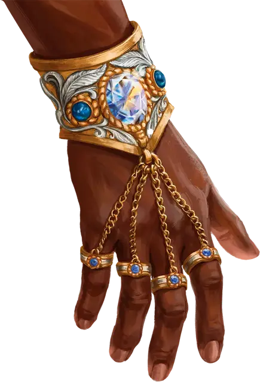

Благотворный браслет Бигби
Bigby’s Beneficent Bracelet
Чудесный предмет, артефакт (требуется настройка)

Это великолепное ювелирное изделие, созданное самим волшебником Бигби, состоит из четырёх золотых колец, прикрепленных с помощью тонких цепочек к наручной манжете, усыпанной сапфирами и бриллиантами.
Случайные свойства. Браслет обладает следующими случайными свойствами, которые определяются броском по соответствующей таблице в статье «Артефакты» или в «Руководстве мастера»:
- 1 малое положительное свойство
- 1 основное положительное свойство
- 1 малое отрицательное свойство
Ловкие пальцы. Пока вы носите браслет, вы можете накладывать заговор волшебная рука [mage hand].
Формирование силы. Сконцентрировав и направив магию браслета в течение 1 минуты, вы можете создать призрачную копию немагического объекта Большого или меньшего размера. Копия появляется в незанятом пространстве в радиусе 10 футов от вас и состоит из осязаемой, но полупрозрачной силы, имитирующей размер, вес и другие свойства копируемого объекта. Копия должна находиться на поверхности или в жидкости, способной её выдержать. Существа могут прикасаться к копии и взаимодействовать с ней, как с немагическим объектом.
Копия невосприимчива ко всем повреждениям и не может быть развеяна, но заклинание распад [disintegrate] немедленно её уничтожает. В противном случае копия исчезает через 8 часов или когда вы развеиваете её действием.
Браслет может создать до трех копий и восстанавливает все израсходованные использования на рассвете.
Рука помощи. Действием вы можете использовать браслет, чтобы наложить заклинание длань Бигби [Bigby's hand] как заклинание 9-го уровня (бонус атаки заклинанием +13). Когда вы накладываете заклинание таким образом, оно не требует концентрации. Если это свойство использовано, оно не может быть использовано вновь до следующего рассвета.